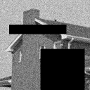
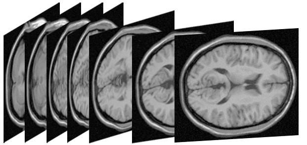
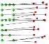
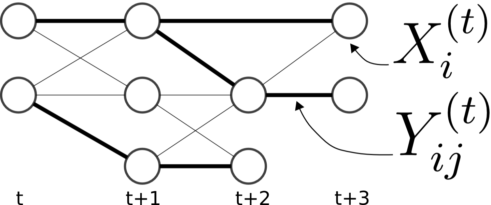
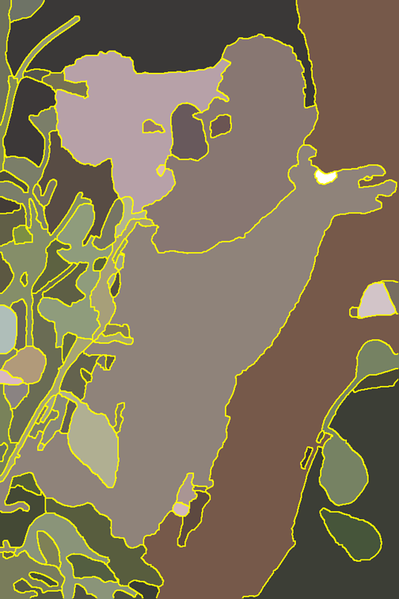
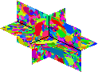
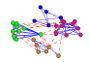
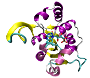
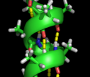

Benchmark database of discrete energy minimization problems. For further details see
| | | Variables | Labels | Order | Structure | Functions | Instances | Reference | Comment |
| In-Painting (N4)
J. Lellmann et.al.
converted by J. Lellmann and J.H. Kappes | | 14400 | 4 | 2 | grid4 | potts | 2 | [56] | |
| In-Painting (N8)
J. Lellmann et.al.
converted by J. Lellmann and J.H. Kappes | | 14400 | 4 | 2 | grid8 | potts | 2 | [56] | |
| ColorSegmentation (N4)
J. Lellmann et.al.
converted by J. Lellmann and J.H. Kappes | | 76800 | 3-12 | 2 | grid4 | potts | 2 | [56] | |
| ColorSegmentation (N8)
J. Lellmann et.al.
converted by J. Lellmann and J.H. Kappes | | 76800 | 3-12 | 2 | grid8 | potts | 2 | [56] | |
| ColorSegmentation
K. Alahari et.al.
converted by J.H. Kappes | | 21000-424720 | 3-4 | 2 | grid8 | potts | 2 | [19] | |
| Object Segmentation
K. Alahari et.al.
converted by J.H. Kappes | | 68160 | 4-8 | 2 | grid4 | potts | 2 | [19] | |
| MRF Photomontage
R. Szeliski et.al.
converted by J.H. Kappes | | 425632-514080 | 5-7 | 2 | grid4 | explicite | 2 | [64] | Models include soft-constraints. |
| MRF Stereo
R. Szeliski et.al.
converted by J.H. Kappes | | ~100000 | 16-60 | 2 | grid4 | trunc. conv. | 3 | [64] | |
 | MRF Inpainting
R. Szeliski et.al.
converted by J.H. Kappes | | 21838-65536 | 256 | 2 | grid4 | trunc. L2 | 2 | [64] | |
| Chinese Characters
S. Nowozin et.al.
converted by S. Nowozin and J. H. Kappes | | 4992-17856 | 2 | 2 | sparse | explicit | 100 | [58] | |
 | Brain 3mm
J. H. Kappes et.al.
converted by J. H. Kappes | | 2356620 | 5 | 2 | 3d-grid6 | potts | 4 | [1] | Good example for large scale |
| Brain 5mm
J. H. Kappes et.al.
converted by J. H. Kappes | | 1413972 | 5 | 2 | 3d-grid6 | potts | 4 | [1] | Good example for large scale |
| Brain 9mm
J. H. Kappes et.al.
converted by J. H. Kappes | | 785540 | 5 | 2 | 3d-grid6 | potts | 4 | [1] | Good example for large scale |
| Scene Decomposition
Gould et.al.
converted by S. Nowozin and J. H. Kappes | | 150-208 | 8 | 2 | sparse | explicit | 751 | [37] | Use superpixels. |
| Geometric Surface Labeling (3)
Gallagher et.al.
converted by D. Batra and J. H. Kappes | | 29-1133 | 3 | 2 | sparse | explicit | 300 | [35,38] | Use superpixels. |
| Geometric Surface Labeling (7)
Gallagher et.al.
converted by D. Batra and J. H. Kappes | | 29-1133 | 7 | 2 | sparse | explicit | 300 | [35,38] | Use superpixels. |
| Image Segmentation with Inclusion Prior
J. Kappes et.al.
converted by J. Kappes | | 1024 | 4 | 4 | sparse | gpotts | 100 | [40] | higher order |
 | Matching
N. Komodakis et.al.
converted by N. Komodakis and J.H. Kappes | | 19-21 | 19-21 | 2 | full / sparse | explicit | 4 | [54] | Local polytope relaxation is not tight. |
 | Cell Tracking
B. X. Kausler et.al.
converted by B. X.Kausler | | 41134 | 2 | 9 | sparse | explicit | 1 | [46] | Model includes soft-constraints. |
 | Image Segmentation
B. Andres et.al.
converted by B. Andres | | 156-3764 | 156-3764 | 2 | sparse | potts | 100 | [20] | Invariant to label permutation. Use superpixels. |
| Image Segmentation 3rd order
B. Andres et.al.
converted by J. Kappes | | 156-3764 | 156-3764 | 3 | sparse | gpotts | 100 | [20] | Invariant to label permutation. Use superpixels. |
| Hirachical Image Segmentation
K. Sungwoong et.al.
converted by K. Sungwoong and J. H. Kappes | | 122-651 | 122-651 | 34-651 | sparse | potts | 715 | [48] | Invariant to label permutation. Use superpixels. |
 | Knott 3D Segmentation 150
Bjoern Andres et.al.
converted by Thorben Kroeger | | 572-972 | 572-972 | 2 | sparse | potts | 2 | [23,22] | Invariant to label permutation. Use supervoxels. |
| Knott 3D Segmentation 300
Bjoern Andres et.al.
converted by Thorben Kroeger | | 3846-5896 | 3846-5896 | 2 | sparse | potts | 2 | [23,22] | Invariant to label permutation. Use supervoxels. |
| Knott 3D Segmentation 450
Bjoern Andres et.al.
converted by Thorben Kroeger | | 15150-17074 | 15150-17074 | 2 | sparse | potts | 2 | [23,22] | Invariant to label permutation. Use supervoxels. |
 | Modularity Clustering
U. Brandes et.al.
converted by Joerg Kappes | | 34-115 | 34-115 | 2 | sparse | potts | 2 | [11] | Invariant to label permutation. |
 | Protein Folding
Yanover et. al.
converted by Joerg Kappes | | 33-1972 | 81-503 | 2 | sparse | explicit | 21 | [2,10] | Large models, arbitrary pairwise terms, selected hard models |
 | Protein Prediction
Jaimovich et. al.
converted by Joerg Kappes | | 14258-14441 | 2 | 3 | spase | explicit | 8 | [2,9] | binary 3rd order models |